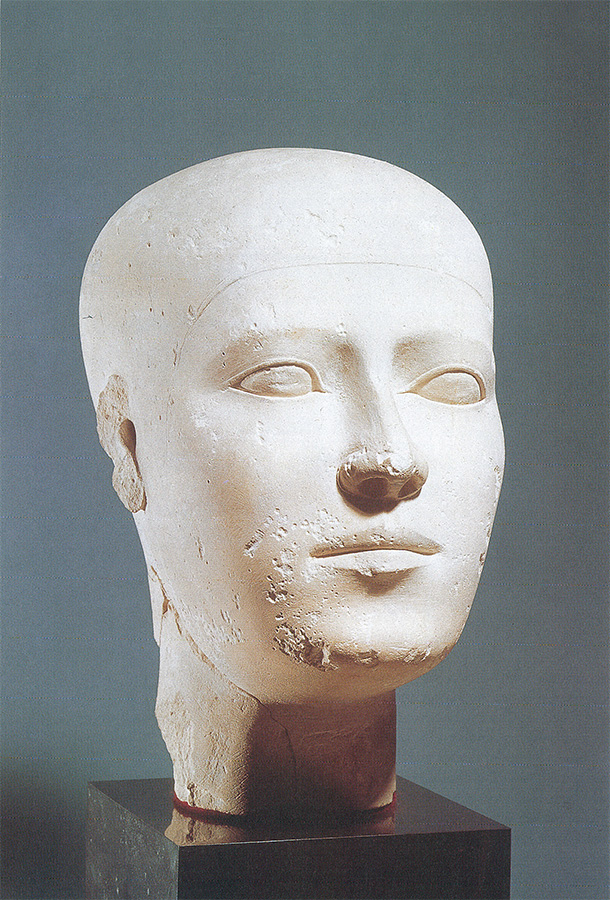

2
ARTE PARA LA ETERNIDAD
Egipto, Mesopotamia, Creta
En todo el mundo existió siempre alguna forma de arte, pero la historia del arte como esfuerzo continuado no comienza en las cuevas del norte de España, del sur de Francia o entre los indios de América del Norte. No existe ilación entre esos extraños comienzos con nuestros días, pero sí hay una tradición directa, que pasa de maestro a discípulo y del discípulo al admirador o al copista, que relaciona el arte de nuestro tiempo —una casa o un cartel— con el del valle del Nilo de hace unos cinco mil años, pues veremos que los artistas griegos realizaron su aprendizaje con los egipcios, y que todos nosotros somos alumnos de los griegos. De ahí que el arte de Egipto tenga formidable importancia sobre el de Occidente.
Es sabido que Egipto es el país de las pirámides (ilustración 31), esas montañas de piedra que se yerguen como hitos del tiempo sobre el distante horizonte de la historia. Por remotas y misteriosas que puedan parecernos, mucho es lo que nos revelan acerca de su propia historia. Nos hablan de un país tan perfectamente organizado que fue posible, en él, amontonar esos gigantescos montes de piedra en el transcurso de la vida de un solo faraón, y nos hablan de faraones tan ricos y poderosos que pudieron obligar a millares y millares de operarios o esclavos a trabajar para ellos año tras año, a extraer bloques de las canteras, a arrastrarlos hasta el lugar de la construcción y a colocarlos unos sobre otros con los medios más primitivos, hasta que la tumba estuviera dispuesta para recibir los restos mortales del faraón. Ningún monarca ni ningún pueblo llegarían a tales dispendios, ni se tomarían tantas molestias para la creación de una mera sepultura. Sabemos, en efecto, que las pirámides tuvieron su importancia práctica a los ojos de reyes y sus súbditos. El faraón era considerado un ser divino que gobernaba sobre estos últimos y que, al abandonar esta tierra, subiría de nuevo a la mansión de los dioses de donde había descendido. Las pirámides, elevándose hacia el cielo, le ayudarían probablemente en su ascensión. En cualquier caso, ellas defenderían el sagrado cuerpo de la destrucción, pues los egipcios creían que el cuerpo debía ser conservado para que el alma viviera en el más allá. Por ello, preservaban el cadáver mediante un laborioso método de embalsamamiento, vendándolo con tiras de tela. Para la momia del faraón se había erigido la pirámide, instalándose su cuerpo allí, en el centro de la gran montaña pétrea, dentro de un cofre también de piedra. En torno a la cámara mortuoria se escribían ensalmos y hechizos para ayudarle en su tránsito hasta el otro mundo.

31 La Gran Pirámide de Giza, h. 2613-2563 a.C.
Pero no son sólo estos antiquísimos vestigios de arquitectura humana los que nos hablan del papel desempeñado por las creencias de la edad antigua en la historia del arte. Los egipcios creían que la conservación del cuerpo no era suficiente. Si también se perennizaba la apariencia del faraón, con toda seguridad éste continuaría existiendo para siempre. Por ello, ordenaron a los escultores que labraran el retrato del faraón en duro e imperecedero granito, y lo colocaran en la tumba donde nadie pudiese verlo, donde operara su hechizo y ayudase a su alma a revivir a través de la imagen. Una denominación egipcia del escultor era, precisamente, «El-que-mantiene-vivo».
En un principio, tales ritos estaban reservados a los faraones, pero pronto los nobles de la casa real tuvieron sus tumbas menores agrupadas en hileras alrededor de la del faraón; y poco a poco cada persona que se creía respetable tomó previsiones para su vida de ultratumba ordenando que se le construyese una costosa sepultura, en la que su alma moraría y recibiría las ofrendas de comida y bebida que se daban a los muertos, y en la que se albergarían su momia y su apariencia vital. Algunos de esos primitivos retratos de la edad de las pirámides —la cuarta dinastía del Imperio antiguo— se hallan entre las obras más bellas del arte egipcio (ilustración 32). Hay en ellas una simplicidad y una solemnidad que no se olvidan fácilmente. Se ve que el escultor no ha tratado de halagar a su modelo o de conservar un gozoso momento de su existencia. No se fijó más que en aspectos esenciales. Cualquier menudo pormenor fue soslayado. Tal vez sea precisamente por esa estricta concentración de las formas básicas de la cabeza humana por lo que esos retratos siguen siendo tan impresionantes, pues, a pesar de su casi geométrica rigidez, no son tan primitivos como los de las máscaras nativas de que hemos tratado en el Capítulo 1. Ni son tampoco de parecido tan fiel como los retratos naturalistas de los artistas de Nigeria (ilustración 23). La observación de la naturaleza y la proporción del conjunto se hallan tan perfectamente equilibradas que nos impresionan para ofrecernos seres dotados de vida que, no obstante, se nos aparecen como remotos en la eternidad.

32 Cabeza retrato, h. 2551-2528 a.C. Hallada en la tumba de Giza; piedra caliza, 27,8 cm de altura; Museo de Arte Histórico, Viena.
Esta combinación de regularidad geométrica y de aguda observación de la naturaleza es característica de todo el arte egipcio. Donde mejor podemos estudiarla es en los relieves y pinturas que adornan los muros de las sepulturas. La palabra adornan, por cierto, difícilmente puede convenir a un arte que no puede ser contemplado sino por el alma del muerto. Estas obras, en efecto, no eran para ser degustadas. También ellas pretendían «mantener vivo». Antes, en un pasado distante y horrendo, existió la costumbre de que al morir un hombre poderoso sus criados y esclavos le siguieran a la tumba, para que llegara al más allá en conveniente compañía, por lo que estos últimos eran sacrificados. Más tarde, esos horrores fueron considerados demasiado crueles o demasiado costosos, y el arte constituyó su rescate. En lugar de criados reales, a los grandes de esta tierra se les ofrecieron sus imágenes por sustituto. Los retratos y modelos encontrados en las tumbas egipcias se relacionan con la idea de proporcionar compañeros a las almas en el otro mundo, una creencia que se encuentra en los inicios de muchas culturas.
Estos relieves y pinturas murales nos proporcionan un reflejo extraordinariamente animado de cómo se vivió en Egipto hace milenios. Y con todo, al contemplarlos por vez primera no puede uno sino maravillarse. La razón de ello está en que los pintores egipcios poseían un modo de representar la vida real completamente distinto del nuestro. Tal vez esto se halle relacionado con la diferencia de fines que inspiró sus pinturas. No era lo más importante la belleza, sino la perfección. La misión del artista era representarlo todo tan clara y perpetuamente como fuera posible. Por ello no se dedicaban a tomar apuntes de la naturaleza tal como ésta aparece desde un punto de mira fortuito. Dibujaban de memoria, y de conformidad con reglas estrictas que aseguraban la perfecta claridad de todos los elementos de la obra. Su método se parecía, en efecto, más al del cartógrafo que al del pintor. La ilustración 33 lo muestra en un sencillo ejemplo, que representa un jardín con un estanque. Si nosotros tuviéramos que dibujar un tema semejante buscaríamos el ángulo de visión más propicio. La forma y el carácter de los árboles podrían ser vistos claramente sólo desde los lados; la forma del estanque, únicamente desde arriba. Este problema no preocupó a los egipcios: representarían el estanque sencillamente como si fuera visto desde arriba y los árboles desde el lado. Los peces y los pájaros en el estanque difícilmente se reconocerían si estuvieran vistos desde arriba; así pues, los dibujaron de perfil.
33 El jardín de Nebamun, h. 1400 a.C. Pintura mural en una tumba de Tebas, 64 x 74,2 cm; Museo Británico, Londres.
En esta simple pintura podemos comprender fácilmente el procedimiento del artista. Muchos dibujos infantiles aplican un principio semejante. Pero los egipcios eran mucho más consecuentes en su aplicación de estos métodos que los niños. Cada cosa tuvo que ser representada en su aspecto más característico. La ilustración 34 muestra los efectos que produjo esta idea en la representación del cuerpo humano. La cabeza se veía mucho más fácilmente en su perfil; así pues, la dibujaron de lado. Pero si pensamos en los ojos, nos los imaginamos como si estuvieran vistos de frente. De acuerdo con ello, ojos enteramente frontales fueron puestos en rostros vistos de lado. La mitad superior del cuerpo, los hombros y el tórax, son observados mucho mejor de frente, puesto que así podemos ver cómo cuelgan los brazos del tronco. Pero los brazos y los pies en movimiento son observados con mucha mayor claridad lateralmente. A esta razón obedece que los egipcios, en esas representaciones, aparezcan tan extrañamente planos y contorsionados. Además, los artistas egipcios encontraban difícil representar el pie izquierdo desde afuera; preferían perfilarlo claramente con el dedo gordo en primer término. Así, ambos son pies vistos de lado, pareciendo poseer la figura del relieve dos pies izquierdos. No debe suponerse que los artistas egipcios creyeran que las personas eran o aparecían así, sino que, simplemente, se limitaban a seguir una regla que les permitía insertar en la forma humana todo aquello que consideraban importante. Tal vez esta adhesión estricta a la norma haya tenido algo que ver con intenciones mágicas, porque ¿cómo podría un hombre con sus brazos en escorzo o «seccionados» llevar o recibir los dones requeridos por el muerto?
34 Retrato de Hesire, (en una puerta de madera de su tumba), h. 2778-2723 a.C. Madera; 115 cm de altura; Museo Egipcio, El Cairo.
Lo cierto es que el arte egipcio no se basa en lo que el artista podría ver en un momento dado, sino en lo que él sabía que pertenecía a una persona o una escena. De esas formas aprendidas y conocidas fue de donde extrajo sus representaciones, de modo muy semejante a como el artista primitivo tomó las suyas de las formas que podía dominar. No sólo fue el conocimiento de formas y figuras el que permitió que el artista diese cuerpo a sus representaciones, sino también el conocimiento de su significado. Nosotros, a veces, llamamos grande a un hombre importante. Los egipcios dibujaban al señor en tamaño mucho mayor que a sus criados, e incluso que a su propia mujer.
Una vez comprendidas estas reglas y convencionalismos, comprendemos también el lenguaje de las pinturas en las que se halla historiada la vida de los egipcios. La ilustración 35 nos da una buena idea de la disposición general de una pared de la tumba de un gran dignatario del llamado Imperio medio, unos mil novecientos años a.C. La inscripción jeroglífica nos dice exactamente quién fue, y cuáles fueron los títulos y honores que cosechó durante su vida. Su nombre y títulos leemos, fueron Knumhotep, Administrador del Desierto Oriental, Príncipe de Menat Kufu, amigo íntimo del Rey, Conocido Real, Superintendente de los Sacerdotes, Sacerdote de Horus, Sacerdote de Anubis, Jefe de todos los Secretos Divinos, y —el más llamativo de todos— Señor de todas las Túnicas. En el lado izquierdo le vemos cazando aves con una especie de bumerán; acompañado por su mujer Keti, su concubina Jat y uno de sus hijos que, a pesar de su pequeño tamaño en la pintura, ostenta el título de Superintendente de Fronteras. En la parte inferior del friso vemos unos pescadores a las órdenes del superintendente Mentuhotep cobrando una gran redada. Sobre la puerta se ve nuevamente a Knumhotep, esta vez atrapando aves acuáticas en una red. Como ya conocemos los métodos del artista egipcio, podemos ver fácilmente cómo opera este artificio. El cazador se coloca detrás de una pantalla vegetal, sosteniendo una cuerda ligada a la malla abierta (esta última representada como vista desde arriba). Cuando las aves han acudido al cebo, aquél tira de la cuerda y ellas quedan aprisionadas en la red. Detrás de Knumhotep se halla su primogénito Nacht, y su Superintendente de Tesoros, quien era, al propio tiempo, responsable de encargar la construcción de su sepultura. En el lado derecho, Knumhotep, al que se dio el nombre de «grande en peces, rico en aves, adorador de la diosa de la caza», es visto arponeando peces (ilustración 36). Otra vez podemos observar los convencionalismos del artista egipcio que prescinde del agua por entre las cañas para mostrarnos el lugar donde se hallan los peces. La inscripción dice: «En una jornada en barca por la charca de los patos silvestres, los pantanos y los ríos, alanceando con la lanza de dos puntas atravesó treinta peces; qué magnífico el día de la caza del hipopótamo.» En la parte inferior se aprecia el divertido episodio de uno de los hombres que ha caído al agua y que es pescado por sus compañeros. La inscripción en torno a la puerta recuerda los días en que tenían que llevarse presentes al muerto, e incluye oraciones a los dioses.

35 Pintura mural en la tumba de Knumhotep, h. 1900 a. C. Hallada en Beni Hassan; de un dibujo del original publicado por Karl Lepsius, Denkmäler, 1842.
36 Detalle de la ilustración 35.
Creo que una vez acostumbrados a contemplar estas pinturas egipcias, nos preocupan tan poco sus faltas de verosimilitud como la ausencia de color en las fotografías. Incluso comenzamos a advertir las grandes ventajas del método egipcio. No hay nada en esas pinturas que dé la impresión de haber surgido por azar, nada que pudiera haber sido exactamente igual tratado de otro modo cualquiera. Merece la pena coger un lápiz e intentar copiar uno de los dibujos primitivos egipcios. Nuestros esbozos resultan desmañados, torcidos e inarmónicos. Al menos los míos. El sentido egipcio del orden en cada pormenor es tan poderoso que cualquier pequeña variación lo trastorna por completo. El artista egipcio empezaba su obra dibujando una retícula de líneas rectas sobre la pared y distribuía con sumo cuidado sus figuras a lo largo de esas líneas. Sin embargo, este sentido geométrico del orden no le privó de observar los detalles de la naturaleza con sorprendente exactitud. Cada pájaro, pez o mariposa está dibujado con tanta fidelidad que los zoólogos pueden incluso reconocer su especie. La ilustración 37 muestra un detalle de la ilustración 35: los pájaros para la red de Knumhotep. Aquí no fue solamente su gran conocimiento del tema el que guió al artista, sino también su clara percepción del color y de las líneas.
37 Aves en una acacia. Detalle de la ilustración 35; de una pintura copia del original según Nina Macpherson Davies.
Uno de los rasgos más estimables del arte egipcio es que todas las estatuas, pinturas y formas arquitectónicas se hallan en su lugar correspondiente como si obedecieran una ley. A esta ley, a la cual parecen obedecer todas las creaciones de un pueblo, la llamamos estilo. Resulta muy difícil explicar con palabras qué es lo que crea un estilo, pero es mucho más fácil verlo. Las normas que rigen todo el arte egipcio confieren a cada obra individual un efecto de equilibrio y armonía.
El estilo egipcio fue un conjunto de leyes estrictas que cada artista tuvo que aprender en su más temprana juventud. Las estatuas sedentes tenían que tener las manos apoyadas sobre las rodillas; los hombres tenían que ser pintados más morenos que las mujeres; la representación de cada divinidad tenía que ser estrictamente respetada: Horus, el dios-sol, tenía que aparecer como un halcón, o con la cabeza de halcón; Anubis, el dios de la muerte, como un chacal o con la cabeza de un chacal (ilustración 38). Cada artista tuvo que aprender también el arte de escribir bellamente. Tuvo que grabar las imágenes y los símbolos de los jeroglíficos clara y cuidadosamente sobre piedra. Pero una vez en posesión de todas esas reglas, su aprendizaje había concluido. Nadie pedía una cosa distinta, nadie le requería que fuera original. Por el contrario, probablemente fue considerado mucho mejor artista el que supiera labrar sus estatuas con mayor semejanza a los admirados monumentos del pasado. Por ello, en el transcurso de tres mil años o más, el arte egipcio varió muy poco. Cuanto fue considerado bueno y bello en la época de las pirámides, se tuvo por excelente mil años después. Ciertamente, aparecieron nuevas modas y se solicitaron nuevos temas al artista, pero su manera de presentar al hombre y la naturaleza siguió siendo, esencialmente, la misma.
38 Anubis, el dios con cabeza de chacal, supervisando el pesaje del corazón de un difunto, mientras Tot, el dios-mensajero con cabeza de ibis, a la derecha, anota el resultado, h. 1285 a.C. Escena de El libro de los muertos egipcio, rollo de papiro pintado colocado en la tumba del difunto; 39,8 cm de altura; Museo Británico, Londres.
Sólo hubo un hombre que rompió las ataduras del estilo egipcio. Fue un faraón de la decimoctava dinastía, conocida entonces como Imperio nuevo, que se fundó después de una catastrófica invasión de Egipto. Este faraón, llamado Amenofis IV, fue un hereje. Rompió con muchas de las costumbres consagradas por una remota tradición. No quiso rendir homenaje a los dioses extrañamente conformados de su pueblo. Para él sólo había un dios supremo, Atón, al que adoraba y al que hizo representar en forma de sol lanzando sus rayos, cada uno dotado de una mano. Se llamó a sí mismo Akenatón, según su dios, y separó su corte del alcance de los sacerdotes de los otros dioses, para trasladarla a una población que se conoce actualmente con el nombre árabe de Tell-el-Amarna.
Las pinturas encargadas por él debieron asombrar a los egipcios de esta época por su novedad. En ellas no se encuentra nada de la dignidad rígida de los primeros faraones. En vez de ello, se hizo retratar con su mujer, Nefertiti (ilustración 40), jugando con sus hijos bajo la bendición del sol. Algunos de sus retratos le muestran como un hombre feo (ilustración 39), tal vez porque deseó que los artistas le representaran en toda su humana flaqueza, o, quizá, estaba tan convencido de su importancia única como profeta que hizo hincapié en que se le representara fielmente.

40 Akenatón y Nefertiti con sus hijos, h. 1345 a.C. Relieve en piedra caliza de un altar, 32,5 x 39 cm; Sección Egipcia del Museo Nacional, Berlín.

39 Amenofis IV (Akenatón), h. 1360 a.C. Relieve en piedra caliza, 14 cm de altura; Sección Egipcia del Museo Nacional, Berlín.
Sucesor de Akenatón fue Tutankamón, cuya tumba con sus tesoros fue descubierta en 1922. Algunas de esas obras siguen obedeciendo al moderno estilo de la religión de Atón, en particular el dorso del trono del faraón (ilustración 42), que muestra a éste y su esposa en idilio conyugal. El faraón se halla sentado en su silla en una actitud que debió escandalizar a los puritanos egipcios —casi recostándose—, a la manera egipcia. Su esposa no aparece más pequeña que él, y pone suavemente la mano sobre su hombro, mientras el dios sol, representado como un globo dorado, extiende sus manos bendiciéndoles.
42 Tutankamón y su esposa, h. 1330 a.C. Detalle del trono de madera tallada, pintada y dorada hallado en su tumba; Museo Egipcio, El Cairo.
Es muy posible que esta reforma artística acaecida en la decimoctava dinastía fuera facilitada por el faraón al importar, de otros países, obras mucho menos conservadoras y rígidas que los productos egipcios. En una isla del Egeo, Creta, habitaba un pueblo excelentemente dotado, cuyos artistas gustaban preferentemente de representar el movimiento. Cuando el palacio de su rey, en Cnosos, fue excavado hace unos noventa años, hubo quienes se resistían a creer que semejante libertad y flexibilidad de estilo pudiera haberse desarrollado en el segundo milenio a.C. Obras del mismo estilo fueron halladas en tierra firme griega; una daga de Micenas, en la que se representa una cacería de leones (ilustración 41), muestra un sentido del movimiento y una suavidad de líneas que debieron impresionar a los artesanos egipcios, llevándoles a desviarse de las normas consagradas por su tradición.
41 Daga, h. 1600 a.C. Hallada en Micenas; bronce incrustado en oro, plata y niel, 23,8 cm de longitud; Museo Arqueológico Nacional, Atenas.
Pero esta apertura del arte egipcio no debió persistir mucho. Ya durante el reinado de Tutankamón las antiguas creencias fueron restauradas, y la ventana al exterior quedó cerrada nuevamente. El estilo egipcio, tal como había existido desde hacía mil años, continuó existiendo durante otro milenio o más, y sin duda los egipcios creyeron que continuaría así eternamente. Muchas obras egipcias de nuestros museos datan de este último período, lo mismo que casi todos los edificios, tales como templos y palacios. Se introdujeron nuevos temas y se llevaron a cabo otras tareas, pero nada esencialmente distinto vino a sumarse a las anteriores realizaciones artísticas.
Egipto, claro está, fue solamente uno de los grandes y poderosos imperios que existieron en Cercano Oriente durante varios milenios. Sabemos por la Biblia que Palestina se hallaba entre el reino egipcio del Nilo y los imperios de Babilonia y Asiria, que se desarrollaron en el valle formado por los ríos Éufrates y Tigris. El arte de Mesopotamia, nombre que dieron los griegos a ese valle, nos es menos conocido que el arte egipcio. Ello se debe, al menos en parte, a una causa accidental. No existían bloques de piedra en aquel valle, y la mayoría de las construcciones fueron hechas con ladrillos, que el paso del tiempo corroyó y redujo a polvo. Hasta la escultura en piedra fue, en comparación, poco frecuente. Pero no es ésta la única explicación del hecho de que sean escasas, relativamente, las obras primitivas de su arte que han llegado hasta nosotros. La razón principal es, probablemente, que ese pueblo no compartió la creencia religiosa de los egipcios de que el cuerpo humano y su representación debían ser conservados para que el alma persistiera. En una época muy primitiva, cuando gobernaba el pueblo sumerio, con la capital en Ur, los reyes todavía eran enterrados con toda su familia, incluso con sus esclavos, para que no les faltara acompañamiento en el mundo del más allá. Tumbas de este período han sido descubiertas recientemente, por lo cual nos es posible admirar algunos de los dioses titulares de esos antiguos y bárbaros reyes en el Museo Británico. Podemos observar cuánto refinamiento y capacidad artística pueden convivir con la crueldad y las supersticiones primitivas.
43 Fragmento de un arpa, h. 2600 a.C. Hallado en Ur; madera dorada e incrustada; Museo Británico, Londres.

Hay, por ejemplo, un arpa procedente de una de las tumbas, decorada con bestias fabulosas (ilustración 43). Más bien parecen uno de nuestros animales heráldicos, no sólo por su aspecto general sino también por su disposición, pues los sumerios poseyeron el gusto de la precisión y de la simetría. No sabemos exactamente qué se proponían significar con esos fabulosos animales, pero es casi seguro que pertenecieron a su mitología, y que las escenas, que nos hacen un efecto semejante al de las ilustraciones de nuestros libros infantiles, poseyeron un sentido muy grave y solemne.
Aun cuando los artistas de Mesopotamia no fueran contratados para decorar las paredes de las tumbas, también tuvieron que asegurar, por distinto modo, que la imagen ayudara a mantener vivo al poderoso. A partir de los tiempos primitivos se desarrolló la costumbre, entre los reyes de Mesopotamia, de encargar monumentos conmemorativos de sus victorias en la guerra, los cuales hacen referencia a las tribus derrotadas y al botín capturado. La ilustración 44 muestra un relieve semejante en el que se representa al rey pisoteando los cuerpos de sus adversarios muertos, mientras otros de sus enemigos le imploran piedad. Tal vez la idea a que respondieron esos monumentos no fue solamente la de mantener vivo el recuerdo de esas victorias. En los primeros tiempos al menos, la antigua creencia en el poder de la imagen pudo aún haber influido en quienes ordenaron su ejecución. Tal vez pensaron que mientras la imagen de su rey se conservara con el pie sobre la garganta de su derribado enemigo, la tribu vencida no podría levantarse.
44 Estela del rey Naramsin, h. 2270 a.C. Hallada en Susa; piedra, 200 cm de altura; Museo del Louvre, París.
En tiempos posteriores, tales monumentos evolucionaron hasta constituir una completa crónica gráfica de las campañas del rey. Las mejor conservadas de esas crónicas datan de un período relativamente tardío, el reinado del rey Asurnasirpal II de Asiria, que vivió en el siglo IX a.C., un poco después del rey bíblico Salomón. Podemos ver en ellas todos los episodios de una campaña bien organizada: la ilustración 45 muestra los detalles de un ataque a una fortaleza, con las máquinas de asedio en acción, los defensores derrumbándose y, en lo alto de una torre, una mujer lamentándose en vano. El método seguido en la representación de estas escenas es, en cierto modo, semejante al de los egipcios, aunque tal vez un tanto menos preciso y rígido. Al contemplarlas se experimenta la sensación de hallarse examinando un noticiario de hace dos mil años; tan reales y convincentes nos parecen. Pero si las observamos más detenidamente, descubriremos un hecho curioso: hay multitud de muertos y heridos en esas guerras terribles, pero ni uno solo es asirio. El arte de la difusión y la propaganda se hallaba muy avanzado ya en aquellos lejanos días. Pero acaso podamos llegar a una idea ligeramente más piadosa de los antiguos asirios; incluso pudiera ser que se hallaran todavía gobernados por la vieja superstición que tan a menudo hemos citado en esta historia: la de que hay mucho más en una representación de lo que ella representa. Tal vez, por alguna extraña razón, no quisieran representar a los asirios heridos. En cualquier caso, la tradición que empezó entonces ha tenido muy larga vida. En todos esos monumentos que glorifican a los caudillos del pasado, la guerra no ofrece la menor dificultad. Tan pronto como aparece el rey, el enemigo se dispersa como paja en el viento.
45 Ejército asirio sitiando una fortaleza, h. 883-859 a.C. Detalle de un relieve en alabastro del palacio del rey Asurnasirpal en Nimrud; Museo Británico, Londres.
Artesano egipcio trabajando en una esfinge de oro, h. 1380 a.C. Copia de una pintura mural en una tumba de Tebas; Museo Británico, Londres.